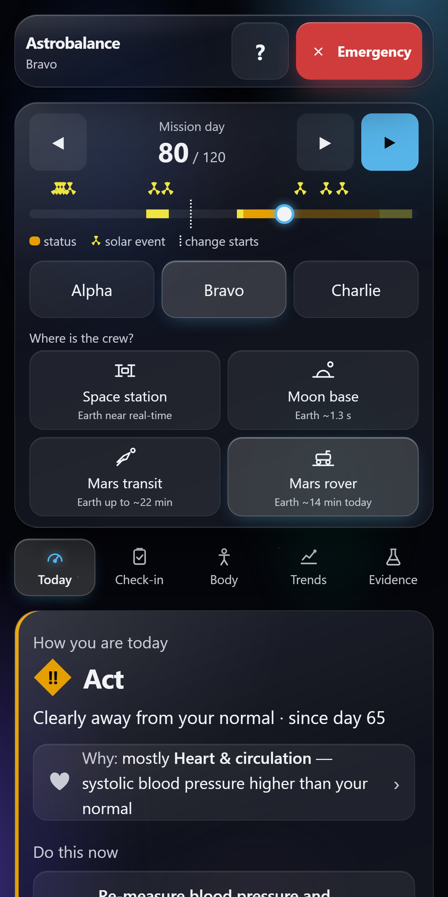
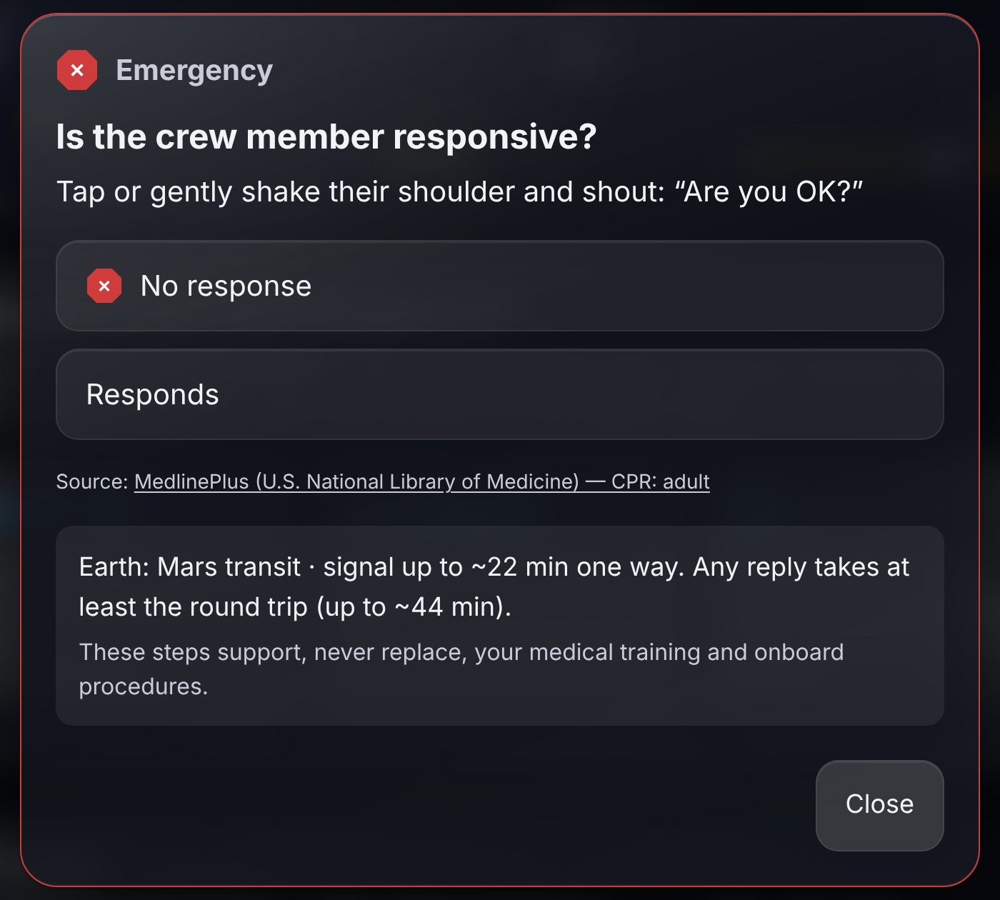
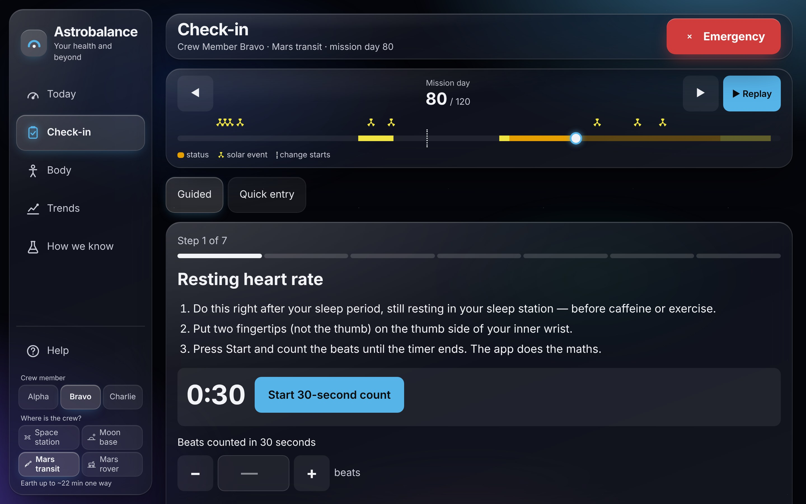
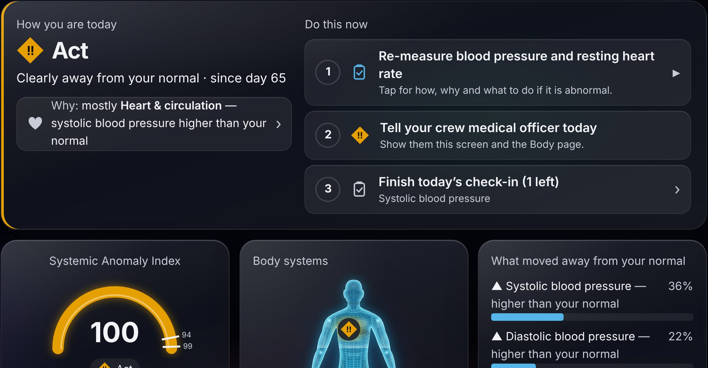
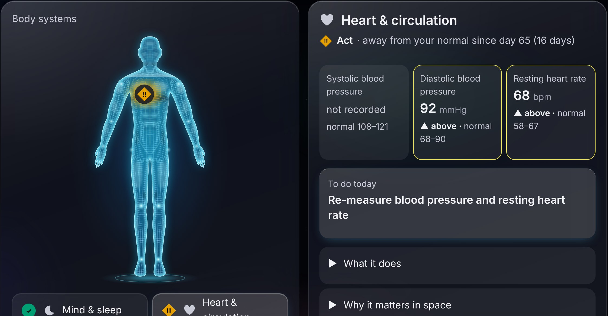
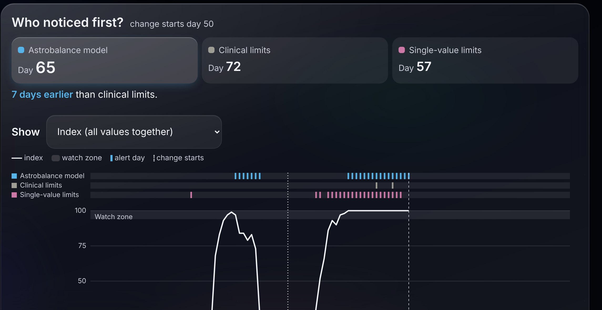
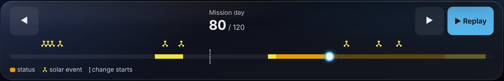
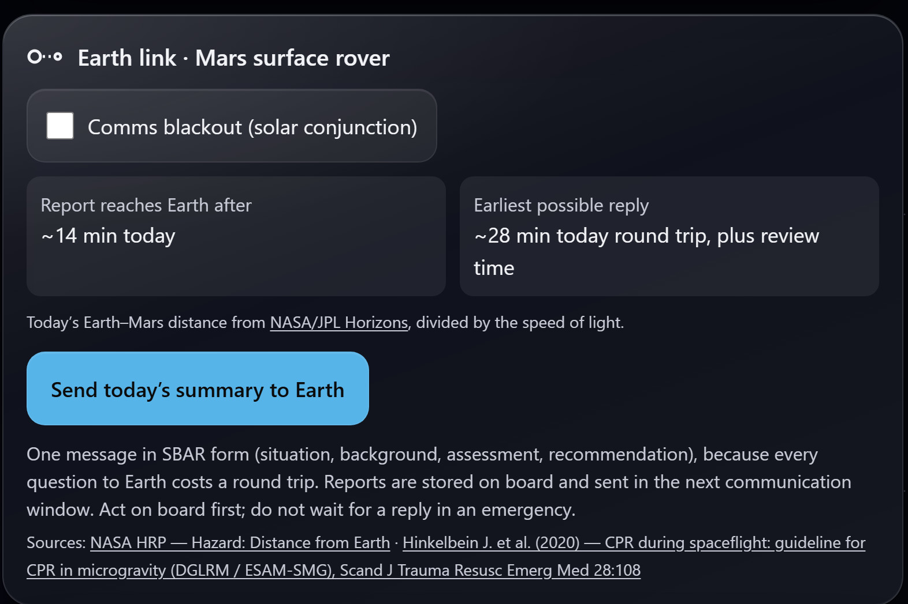

An offline health app for long missions. It learns what is normal for each astronaut and warns early, before a single value crosses a limit.

NASA Space Apps Challenge 2026 · Rzeszów · Synthetic data calibrated on published sources; proof of concept, not a medical device.
The scenario from the challenge video, Brazilian Space Agency
“Your fellow crew mate feels a sharp pain in the chest and collapses.”
Any answer takes the round trip (NASA ASCEND; the real delay of each day from NASA/JPL Horizons)
A slow change can stay inside them for weeks
Radiation, isolation, distance, gravity, closed cabin
So we measure each astronaut against their own normal.

Emergency guide in the app, one tap away. It shows the delay to Earth.
A guided check-in, one measurement at a time; the app does the maths

Blood pressure, heart rate, temperature, glucose, sleep, mood, reaction test
Days 1–21, then it follows slow, healthy change
All values together over 14 days; no illness labels needed
Watch or Act, what moved, and the next step
Critical limits and the emergency guide work without the model, from day 1.
Crew Member Bravo · mission day 80

Today — the status, up to three next steps, and the reason in plain words.

Body — which system moved, with each value next to your own normal range.
Compares how you feel with your reaction test: “feels fine” is not always “is fine” before a spacewalk.
The same change in several crew members points to the cabin (CO2, food, schedule), not to one person.
Synthetic crews, one test on an illness the model never saw, and real everyday data

Bravo’s change starts on day 50. Astrobalance warns on day 65, clinical limits on day 72. Single-value limits react on day 57; both they and Astrobalance also raised one false alarm earlier.
infection onset · clinical limits 9 of 10
median, same test
clinical 0.121 · single-value 0.241
PMData, 16 people · single-value 0.068/week
42 setups · autoencoders at most 59% · clinical 44%
Single-value limits were 3.5 days faster on infections, with 4.4× the false alarms. 72 automated tests run on every change. Synthetic data calibrated on published sources: proof of concept, not clinical validation.
DONKI solar events · JPL Horizons Earth–Mars delay · Inspiration4 blood tests (NASA OSDR)


Astronaut records are private, so the crews are synthetic; real people (PMData, 16, CC BY 4.0) set the noise and test the alarm rate. Sources: README.
The same offline monitoring for isolated crews on Earth
Antarctic stations in winter, remote communities with little access to care, long voyages at sea. A personal normal needs no patient database and no constant connection.
Tested once on an illness it never saw: 10 of 10 caught, a median 5 days earlier than clinical limits.
Team CosmoMyszki · Jan Domański, Kamila Bąk, Zuzanna Marciniak · Code and texts drafted with AI assistance (Claude) and reviewed by us; no AI images.